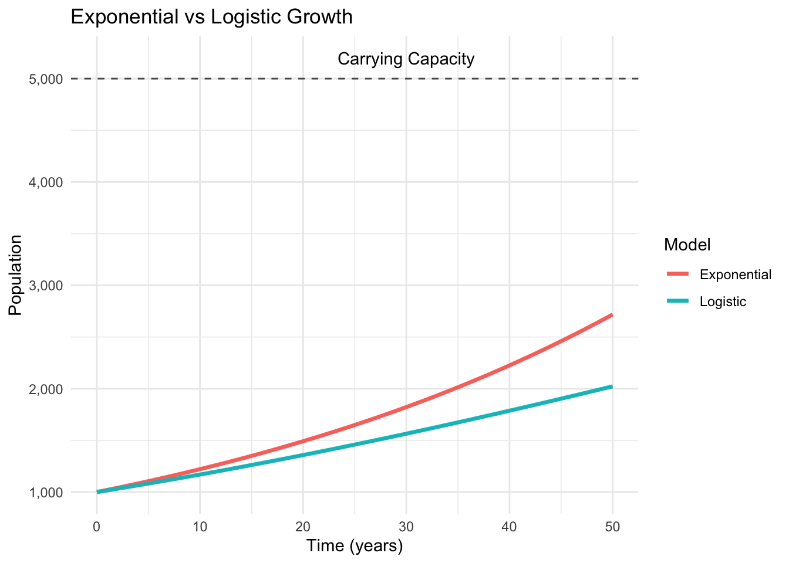

Chapter 10 Memory Matters: Introduction to Delay Differential Equations
The assumptions we make when modeling systems often reveal more about our limitations than about reality itself. Throughout our exploration of dynamical systems, we have implicitly assumed something profoundly unrealistic: that systems respond instantaneously to their current state. A predator encounters prey and immediately converts that meal into offspring. A disease spreads through contact with infected individuals who become infectious the moment they’re exposed. An immune system detects a pathogen and mounts an instantaneous response.
Nature, of course, operates differently. Biological processes unfold over time. Rabbits don’t reproduce the instant they consume grass—gestation takes weeks. Viral infections don’t render hosts infectious immediately—incubation periods can span days or weeks. Drug treatments don’t act instantaneously—pharmacokinetics involves absorption, distribution, metabolism, and elimination, each with characteristic timescales. These time delays fundamentally alter system dynamics, introducing memory effects that can destabilize stable equilibria, create oscillations where none existed before, and generate complex behaviors impossible in systems governed by ordinary differential equations.
Delay differential equations (DDEs) incorporate these memory effects explicitly, allowing a system’s rate of change to depend not only on its current state but also on its past states. This seemingly modest extension—replacing \(f(x(t))\) with \(f(x(t), x(t-\tau))\)—transforms our mathematical framework in profound ways. The system’s state space becomes infinite-dimensional, requiring specification of entire history functions as initial conditions. Stability analysis involves transcendental characteristic equations with infinitely many roots. Bifurcations can occur as delays increase, transforming stable steady states into oscillatory dynamics through mechanisms impossible in ordinary differential equations.
Consider the simplest possible example—a scalar linear delay equation with negative feedback:
\[\frac{dx}{dt} = -ax(t) - bx(t-\tau)\]
Here, \(x(t)\) represents some quantity (population size, hormone concentration, economic indicator), \(a > 0\) governs instantaneous decay, \(b > 0\) represents the strength of the delayed negative feedback, and \(\tau > 0\) represents the time delay. Despite its apparent simplicity, this equation exhibits remarkably rich behavior. For small delays, the system behaves much like its ordinary differential equation counterpart, with solutions converging to equilibrium. As the delay increases beyond a critical threshold, however, the equilibrium can lose stability, spawning sustained oscillations. The delay transforms a simple damped system into an oscillator—memory creates dynamics.
10.1 The Mathematical Structure of Delay Systems
A general autonomous delay differential equation takes the form:
\[\frac{dx}{dt} = f(x(t), x(t-\tau_1), x(t-\tau_2), \ldots, x(t-\tau_n))\]
where \(x(t) \in \mathbb{R}^d\) represents the system state and \(\tau_i > 0\) denote discrete time delays. The function \(f\) can depend on the current state and any number of past states at specific time lags. More generally, systems can involve distributed delays where the entire history influences dynamics:
\[\frac{dx}{dt} = f\left(x(t), \int_{-\infty}^{t} K(t-s)x(s)ds\right)\]
Here, the kernel function \(K(t-s)\) weights contributions from different points in the past, representing situations where recent history matters most but distant past still exerts some influence.
The fundamental challenge posed by delay differential equations stems from their initial conditions. Unlike ordinary differential equations requiring only the state at time \(t=0\), delay equations require specification of the system’s history over an entire interval. For a delay \(\tau\), we must specify \(x(t)\) for all \(t \in [-\tau, 0]\)—an initial function or history function \(\phi(t)\) rather than a single initial value. This transforms the phase space from finite-dimensional \(\mathbb{R}^d\) to infinite-dimensional function spaces, fundamentally altering the mathematical landscape.
Despite this complexity, delay equations preserve crucial properties of ordinary differential equations. Solutions exist and are unique given continuous initial functions and sufficiently well-behaved right-hand sides. Trajectories evolve continuously, and the system’s behavior for \(t > 0\) is completely determined by the initial history.
10.2 Stability Analysis and Characteristic Equations
Consider a delay differential equation with a fixed point \(x^*\) satisfying \(f(x^*, x^*, \ldots, x^*) = 0\). To analyze stability, we linearize around this equilibrium. For the scalar equation with negative feedback defined above:
\[\frac{dy}{dt} = -ay(t) - by(t-\tau)\]
We seek solutions of the form \(y(t) = e^{\lambda t}\), substituting into the equation:
\[\lambda e^{\lambda t} = -ae^{\lambda t} - be^{\lambda(t-\tau)} = -ae^{\lambda t} - be^{\lambda t}e^{-\lambda\tau}\]
Dividing by \(e^{\lambda t}\) yields the characteristic equation:
\[\lambda = -a - be^{-\lambda\tau}\]
or equivalently:
\[\lambda + a + be^{-\lambda\tau} = 0\]
This transcendental equation possesses infinitely many complex roots \(\lambda_k\). The equilibrium is stable if all roots satisfy \(\text{Re}(\lambda_k) < 0\).
For the case \(a = 0\) (pure delayed negative feedback), the characteristic equation becomes \(\lambda + be^{-\lambda\tau} = 0\). This equation reveals how delays affect stability. There exists a critical delay \(\tau_c\) beyond which the equilibrium destabilizes. As \(\tau\) increases through \(\tau_c\), a pair of complex conjugate roots crosses the imaginary axis, triggering a Hopf bifurcation that creates periodic oscillations.
The critical delay can be found by setting \(\lambda = i\omega\) (purely imaginary) and solving:
\[i\omega = -be^{-i\omega\tau} = -b(\cos(-\omega\tau) + i\sin(-\omega\tau))\] \[i\omega = -b\cos(\omega\tau) + ib\sin(\omega\tau)\]
Equating real and imaginary parts: 1. \(0 = -b\cos(\omega\tau) \implies \omega\tau = \pi/2\) (since \(\cos(\theta)=0\) at \(\pi/2\)) 2. \(\omega = b\sin(\omega\tau) \implies \omega = b\) (since \(\sin(\pi/2)=1\))
Thus, the oscillation frequency is \(\omega = b\), and the critical delay is:
\[\tau_c = \frac{\pi}{2b}\]
This critical delay threshold represents a fundamental property of delayed negative feedback systems: sufficiently large delays destabilize negative feedback, converting damped responses into sustained oscillations.
10.3 Numerical Implementation
We will implement this using the deSolve package in R. Note that for proper DDE solving, we must correctly handle the history (time \(t \leq 0\)) and ensure the feedback term allows for instability (negative feedback).
##
## Attaching package: 'dplyr'## The following objects are masked from 'package:stats':
##
## filter, lag## The following objects are masked from 'package:base':
##
## intersect, setdiff, setequal, union# Scalar linear delay equation: dx/dt = -ax(t) - bx(t-tau)
# Note the NEGATIVE sign on the delayed term to create negative feedback
linear_dde <- function(t, y, parms) {
with(as.list(parms), {
# Access lag values
# If t < tau, lagvalue returns the initial history (assumed constant y0 here)
if (t <= tau) {
lag_y <- y # Simplified: assumes constant history equal to initial y
} else {
lag_y <- lagvalue(t - tau)
}
# Equation: Negative Feedback
dy <- -a * y - b * lag_y
list(dy)
})
}
# Parameters for stability analysis
# We fix 'b' (feedback strength) and vary 'tau'
# Critical delay is roughly pi/(2*b) ~= 1.96
params_stable <- list(a = 0.1, b = 0.8, tau = 1.0)
params_unstable <- list(a = 0.1, b = 0.8, tau = 3.5)
# Time points
times <- seq(0, 50, by = 0.1)
# Solve stable case
sol_stable <- dede(y = 1.0,
times = times,
func = linear_dde,
parms = params_stable)
# Solve unstable case
sol_unstable <- dede(y = 1.0,
times = times,
func = linear_dde,
parms = params_unstable)
# Create comparison plot
df_stable <- data.frame(time = sol_stable[,1], value = sol_stable[,2],
case = "Small Delay (Stable)")
df_unstable <- data.frame(time = sol_unstable[,1], value = sol_unstable[,2],
case = "Large Delay (Unstable)")
df_combined <- rbind(df_stable, df_unstable)
delay_comparison_plot <- ggplot(df_combined, aes(x = time, y = value, color = case)) +
geom_line(size = 1) +
geom_hline(yintercept = 0, linetype = "dashed", color = "gray50") +
scale_color_manual(values = c("Small Delay (Stable)" = "steelblue",
"Large Delay (Unstable)" = "coral")) +
labs(title = "Effect of Time Delay on Stability",
subtitle = "Same negative feedback strength, different delays",
x = "Time", y = "System State", color = "") +
theme_minimal() +
theme(legend.position = "bottom")## Warning: Using `size` aesthetic for lines was deprecated in ggplot2 3.4.0.
## ℹ Please use `linewidth` instead.
## This warning is displayed once every 8 hours.
## Call `lifecycle::last_lifecycle_warnings()` to see where this warning was
## generated.
The visualization reveals the dramatic effect of delay magnitude. With small delays, perturbations decay monotonically to equilibrium. With larger delays, the same system oscillates with growing amplitude, eventually settling into sustained periodic motion (or diverging if not bounded by non-linearities).
10.4 Population Dynamics with Maturation Delays
Ecological systems provide natural contexts for delay differential equations. A classic model is the Hutchinson-Wright equation (also known as the delayed logistic equation). Unlike models that separate birth and death naively, this formulation applies the delay specifically to the density-dependent regulatory term.
\[\frac{dN}{dt} = rN(t)\left(1 - \frac{N(t-\tau)}{K}\right)\]
Here, \(N(t)\) represents population density, \(r\) denotes the intrinsic growth rate, \(K\) represents carrying capacity, and \(\tau\) is the maturation delay. The term \((1 - N(t-\tau)/K)\) represents the regulatory feedback: resources consumed \(\tau\) time units ago determine the current growth capacity. This formulation correctly combines birth and death processes into a net growth rate, avoiding biologically impossible “negative birth rates” while preserving the oscillatory dynamics caused by delayed resource limitation.
This equation exhibits profoundly different behavior than the ordinary logistic equation. For small delays, the carrying capacity remains a stable equilibrium. As the delay increases, this equilibrium can destabilize through a Hopf bifurcation, creating sustained population cycles—a phenomenon observed in nature, such as in blowfly populations or lemming cycles.
10.5 Medical Applications: Infectious Disease with Latency
Infectious disease dynamics provide compelling applications of delay differential equations. Most diseases involve a latent period—the time between infection and becoming infectious. To model this rigorously without violating mass conservation, we must account for the individuals currently in the “latent” phase (often denoted \(E\)).
A consistent DDE formulation for an SIR model with latency is:
\[\frac{dS}{dt} = -\beta S(t)I(t)\] \[\frac{dI}{dt} = \beta S(t-\tau)I(t-\tau)e^{-\mu\tau} - \gamma I(t)\] \[\frac{dR}{dt} = \gamma I(t)\]
Here, the inflow to the Infectious class \(I\) at time \(t\) corresponds exactly to the outflow from the Susceptible class \(S\) at time \(t-\tau\), multiplied by the survival probability \(e^{-\mu\tau}\) (where \(\mu\) is natural mortality). This ensures that individuals don’t just “vanish”—those who left \(S\) but haven’t yet entered \(I\) are implicitly in the latent (Exposed) stage.
# SIR model with latent period (SEIR reduced to DDE)
sir_delay <- function(t, state, parms) {
with(as.list(c(state, parms)), {
# To conserve mass in the math, we track S and I history
if (t <= tau) {
# Initial history
lag_S <- S0
lag_I <- I0
} else {
lag_state <- lagvalue(t - tau)
lag_S <- lag_state[1]
lag_I <- lag_state[2]
}
# Current infection events
new_infections_current <- beta * S * I
# Delayed entry into Infectious class (recruitment from latent phase)
# This matches the S outflow from tau ago
new_infectious_delayed <- beta * lag_S * lag_I * exp(-mu * tau)
# Derivatives
dS <- -new_infections_current
dI <- new_infectious_delayed - gamma * I
dR <- gamma * I
list(c(dS, dI, dR))
})
}
# Parameters
params_disease <- list(
beta = 0.5,
gamma = 0.2,
mu = 0.0001,
tau = 2,
S0 = 0.99,
I0 = 0.01
)
# Initial conditions
initial_state <- c(S = params_disease$S0, I = params_disease$I0, R = 0)
# Time span
times_disease <- seq(0, 150, by = 0.1)
# Solve SIR with delay
sol_sir_delay <- dede(y = initial_state,
times = times_disease,
func = sir_delay,
parms = params_disease)
# Convert to data frame
df_sir <- as.data.frame(sol_sir_delay)
colnames(df_sir) <- c("time", "S", "I", "R")
# Plot
df_sir_long <- df_sir %>%
tidyr::pivot_longer(cols = c(S, I, R), names_to = "compartment", values_to = "proportion")
epidemic_plot <- ggplot(df_sir_long, aes(x = time, y = proportion, color = compartment)) +
geom_line(size = 1.2) +
scale_color_manual(values = c("S" = "steelblue", "I" = "coral", "R" = "darkgreen")) +
labs(title = "Epidemic Dynamics with Latent Period",
subtitle = "Implicit 'Exposed' population exists between S drop and I rise",
x = "Time (days)", y = "Proportion", color = "Compartment") +
theme_minimal()
print(epidemic_plot)
The epidemic curve reveals that the sum \(S+I+R\) is not constant (it is slightly less than 1), representing the fraction of the population currently in the latent period (Exposed) at any given time.
10.6 Drug Pharmacokinetics and Treatment Delays
Pharmaceutical interventions involve inherent delays. In numerical simulations, handling repeated dosing requires care. Simple “if” statements inside differential equations can be skipped by adaptive solvers. The robust method is to use an “events” dataset that forces the solver to add the dose at specific times.
Consider a model where a drug is added to a depot \(A\) (gut), absorbed with a delay \(\tau\) into the central compartment \(C\), and eliminated.
\[\frac{dA}{dt} = - k_a A(t)\] \[\frac{dC}{dt} = \frac{k_a A(t-\tau)}{V} - k_e C(t)\]
Dosing is handled as discrete events where \(A(t)\) increases instantaneously by the dose amount.
# Pharmacokinetic model with absorption delay
pk_delay <- function(t, state, parms) {
with(as.list(c(state, parms)), {
# Delayed absorption from Depot (A)
if (t <= tau) {
lag_A <- 0
} else {
lag_state <- lagvalue(t - tau)
lag_A <- lag_state[1]
}
# Derivatives
dA <- -ka * A
dC <- (ka * lag_A / V) - ke * C
list(c(dA, dC))
})
}
# Parameters
params_pk <- list(
ka = 1.5, # Absorption rate (1/hour)
ke = 0.3, # Elimination rate (1/hour)
V = 50, # Volume of distribution (L)
tau = 2.0 # Absorption delay (hours)
)
# Dosing Events: 500mg every 8 hours for 9 doses
dosing_times <- seq(0, 64, by = 8)
dose_events <- data.frame(var = "A",
time = dosing_times,
value = 500,
method = "add")
# Initial conditions
initial_pk <- c(A = 0, C = 0)
times_pk <- seq(0, 72, by = 0.1)
# Solve with events
sol_pk <- dede(y = initial_pk,
times = times_pk,
func = pk_delay,
parms = params_pk,
events = list(data = dose_events))
# Plot
df_pk <- as.data.frame(sol_pk)
colnames(df_pk) <- c("time", "A", "C")
pk_plot <- ggplot(df_pk, aes(x = time, y = C)) +
geom_line(color = "darkblue", size = 1.2) +
geom_hline(yintercept = 1.5, linetype = "dashed", color = "darkgreen") +
annotate("text", x = 65, y = 1.6, label = "Therapeutic Upper Limit", color = "darkgreen") +
labs(title = "Drug Concentration with Absorption Delay",
subtitle = "Rigorous event-based dosing simulation",
x = "Time (hours)", y = "Concentration (mg/L)") +
theme_minimal()
print(pk_plot)By using event-based dosing, we ensure that every milligram of the drug is accounted for, regardless of the solver’s step size. The delay \(\tau\) shifts the peak concentration relative to the dosing time, a critical factor in determining whether a drug stays within its therapeutic window.
10.7 Immunological Memory and Delayed Response
The immune system embodies biological memory. A simplified model of viral infection with delayed immune response can be written as:
\[\frac{dV}{dt} = rV(t)\left(1 - \frac{V(t)}{K}\right) - pV(t)E(t)\] \[\frac{dE}{dt} = cV(t-\tau) - \delta E(t)\]
Here, \(V(t)\) represents viral load and \(E(t)\) denotes effector immune cells. The term \(cV(t-\tau)\) implies that the production of immune cells today depends on the viral load detected \(\tau\) days ago (the time required for clonal expansion).
# Viral infection with delayed immune response
viral_immune <- function(t, state, parms) {
with(as.list(c(state, parms)), {
if (t <= tau) {
lag_V <- V0 # Initial history
} else {
lag_state <- lagvalue(t - tau)
lag_V <- lag_state[1]
}
# Viral dynamics (Logistic growth - predation)
dV <- r * V * (1 - V/K) - p * V * E
# Immune response dynamics (Delayed recruitment)
dE <- c * lag_V - delta * E
list(c(dV, dE))
})
}
# Parameters
params_immune <- list(
r = 0.5, K = 1000, p = 0.01,
c = 0.1, delta = 0.2, tau = 5,
V0 = 100, E0 = 5
)
initial_immune <- c(V = params_immune$V0, E = params_immune$E0)
times_immune <- seq(0, 200, by = 0.1)
sol_immune <- dede(y = initial_immune,
times = times_immune,
func = viral_immune,
parms = params_immune)
df_immune <- as.data.frame(sol_immune)
colnames(df_immune) <- c("time", "V", "E")
# Plotting
df_immune_long <- df_immune %>%
tidyr::pivot_longer(cols = c(V, E), names_to = "variable", values_to = "value")
immune_plot <- ggplot(df_immune_long, aes(x = time, y = value, color = variable)) +
geom_line(size = 1.2) +
facet_wrap(~variable, ncol = 1, scales = "free_y") +
labs(title = "Chronic Viral Infection Dynamics",
subtitle = "Oscillations driven by 5-day immune delay",
x = "Time (days)", y = "Count") +
theme_minimal() + theme(legend.position = "none")
print(immune_plot)
The oscillatory dynamics reflect the chase between viral replication and immune control. Viral load peaks trigger immune responses that arrive too late to prevent overshoot, leading to excessive immune activity that suppresses viral load below equilibrium.
10.8 Connecting Past and Future
Time delays force us to confront the role of history in shaping future dynamics. Systems with memory cannot be understood by examining their current state alone—we must know where they’ve been to predict where they’re going. This requirement transforms both our mathematical tools and our conceptual frameworks for understanding complex systems.
The techniques we’ve explored—characteristic equations for stability analysis, numerical integration respecting delay structures, and event-based handling of discontinuities—provide foundations for analyzing systems where time matters intrinsically. From disease outbreaks to drug responses to immunological dynamics, delay differential equations capture the temporal structures that ordinary differential equations miss, revealing oscillations, instabilities, and complex behaviors that arise specifically from memory effects.
As we continue exploring dynamical systems, the infinite-dimensional perspective opened by delay equations prepares us for further generalizations: partial differential equations where space and time intertwine, stochastic systems where randomness shapes evolution, and network dynamics where delays govern interactions across populations. The conceptual leap from instantaneous response to delayed feedback represents not merely technical sophistication but fundamental recognition that time itself—not just change over time—structures the systems we seek to understand.